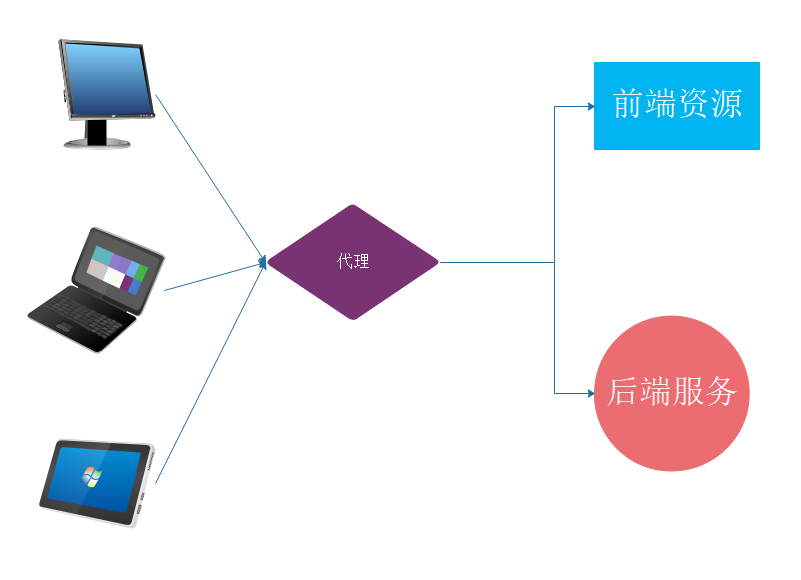

说到跨域访问，必须先解释一个名词：同源策略。所谓同源策略就是在浏览器端出于安全考量，向服务端发起请求必须满足：协议相同、Host(ip)相同、端口相同的条件，否则访问将被禁止，该访问也就被称为跨域访问。
虽然跨域访问被禁止之后，可以在一定程度上提高了应用的安全性，但也为开发带来了一定的麻烦。比如：我们开发一个前后端分离的易用，页面及js部署在一个主机的nginx服务中，后端接口部署在一个tomcat应用容器中，当前端向后端发起请求的时候一定是不符合同源策略的，也就无法访问。那么我们如何解决这个问题？就是本文需要向大家说明的内容。
虽然浏览器对于不符合同源策略的访问是禁止的，但是仍然存在例外的情况，如以下资源引用的标签不受同源策略的限制：
除了基于HTML本身的特性实现跨域访问，我们还可以使用jsonp、window的postMessage实现跨域访问。这些都是前端实现跨域访问的方式。
实际上对跨域访问的支持在服务端实现起来更加容易，最常用的方法就是通过代理的方式，如：
其实实现代理跨域的逻辑非常简单：就是在不同的资源服务：js资源、html资源、css资源、接口数据资源服务的前端搭建一个中间层，所有的浏览器及客户端访问都通过代理转发。所以在浏览器、客户端看来，它们访问的都是同一个ip、同一个端口的资源，从而符合同源策略实现跨域访问。

跨域资源共享（CORS）：通过修改Http协议header的方式，实现跨域。说的简单点就是，通过设置HTTP的响应头信息，告知浏览器哪些情况在不符合同源策略的条件下也可以跨域访问，浏览器通过解析Http协议中的Header执行具体判断。具体的Header如下：
CROS跨域常用header
Accept、Accept-Language、Content-Language、Content-Type为大家介绍四种实现CORS的方法，两种是全局配置，两种是局部接口生效的配置。一般来说，SpringBoot项目采用其中一种方式实现CORS即可。
@Configuration
public class GlobalCorsConfig {
@Bean
public CorsFilter corsFilter() {
CorsConfiguration config = new CorsConfiguration();
//开放哪些ip、端口、域名的访问权限，星号表示开放所有域
config.addAllowedOrigin("*");
//是否允许发送Cookie信息
config.setAllowCredentials(true);
//开放哪些Http方法，允许跨域访问
config.addAllowedMethod("GET","POST", "PUT", "DELETE");
//允许HTTP请求中的携带哪些Header信息
config.addAllowedHeader("*");
//暴露哪些头部信息（因为跨域访问默认不能获取全部头部信息）
config.addExposedHeader("*");
//添加映射路径，“/**”表示对所有的路径实行全局跨域访问权限的设置
UrlBasedCorsConfigurationSource configSource = new UrlBasedCorsConfigurationSource();
configSource.registerCorsConfiguration("/**", config);
return new CorsFilter(configSource);
}
} @Configuration
public class GlobalCorsConfig {
@Bean
public WebMvcConfigurer corsConfigurer() {
return new WebMvcConfigurer() {
@Override
public void addCorsMappings(CorsRegistry registry) {
registry.addMapping("/**") //添加映射路径，“/**”表示对所有的路径实行全局跨域访问权限的设置
.allowedOrigins("*") //开放哪些ip、端口、域名的访问权限
.allowCredentials(true) //是否允许发送Cookie信息
.allowedMethods("GET","POST", "PUT", "DELETE") //开放哪些Http方法，允许跨域访问
.allowedHeaders("*") //允许HTTP请求中的携带哪些Header信息
.exposedHeaders("*"); //暴露哪些头部信息（因为跨域访问默认不能获取全部头部信息）
}
};
}
} @RequestMapping("/cors")
@ResponseBody
@CrossOrigin(origins = "http://localhost:8080", maxAge = 3600)
public String cors( ){
return "cors";
}这种方式略显麻烦，不建议在SpringBoot项目中使用。
@RequestMapping("/cors")
@ResponseBody
public String cors(HttpServletResponse response){
//使用HttpServletResponse定义HTTP请求头，最原始的方法也是最通用的方法
response.addHeader("Access-Control-Allow-Origin", "http://localhost:8080");
return "cors";
}在SpringBoot项目外随便定义一个HTML，并写代码触发如下的ajax代码。（触发过程我就不写了，定义一个按钮加一个监听函数即可）。以下是跨域AJAX请求验证的核心代码：
$.ajax({
url: 'http://localhost:8090/cors',
type: "POST",
xhrFields: {
withCredentials: true //允许发送Cookie信息
},
success: function (data) {
alert("跨域请求配置成功")
},
error: function (data) {
alert("跨域请求配置失败")
}
})